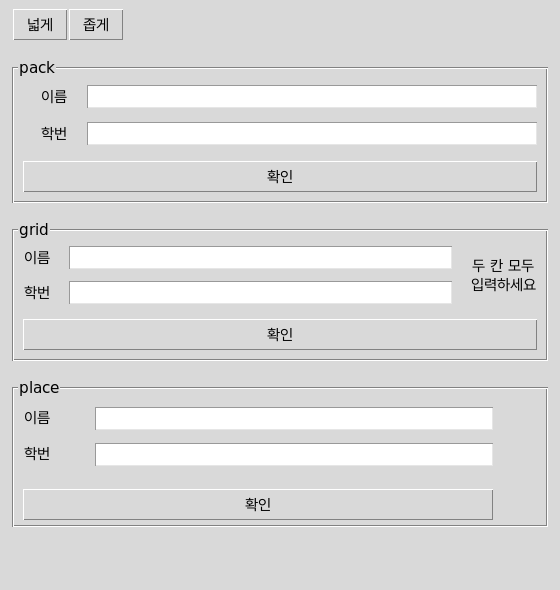
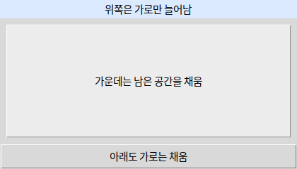
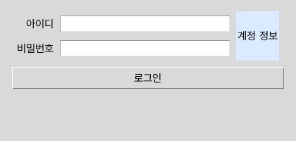
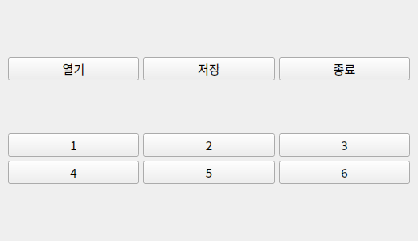
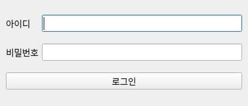

pack() / grid() / place()위젯을 생성한 것만으로는 화면에 나타나지 않습니다. 부모를 정하고 배치를 호출해야 합니다.
 인공지능 파이썬 실무
인공지능 파이썬 실무Ⅱ. GUI 프로그래밍 · 주제 04 / 11
창을 늘렸을 때도 사용하기 좋은 화면을 만드세요.
대단원 Ⅱ. GUI 프로그래밍 교과서 40–59쪽
중단원 02. GUI 프로그래밍 작성 · 49–57쪽
소단원 01. tkinter의 구성 요소 · 50–51쪽
이 웹 주제의 연계 범위: 51쪽 + 보강
웹 학습 주제 04 / 11
창을 늘렸을 때도 사용하기 좋은 화면을 만드세요.
| 선택 | 적합한 화면 | 확인할 것 |
|---|---|---|
| 세로·가로 배치 | 버튼 모음 | 순서와 늘어남 |
| 격자 배치 | 입력 폼 | 행·열 번호 |
| 고정 좌표 place | 정해진 위치 | 창 크기 변화에 취약 |
BEFORE THE CODE
새 이름·속성이 코드에 나오기 전에 짧게 봅니다. 외우기보다 역할을 먼저 구별하세요.
pack() / grid() / place()위젯을 생성한 것만으로는 화면에 나타나지 않습니다. 부모를 정하고 배치를 호출해야 합니다.
expand는 남는 공간을 누구에게 줄지, fill은 받은 칸을 위젯이 채울지입니다.
격자 칸보다 위젯이 작을 때 어느 벽에 붙일지입니다. "ew"는 좌우로 늘립니다.
HISTORY / VIDEO
Tk는 처음부터 pack·grid·place 세 배치 관리자를 두었습니다. 위젯을 만드는 일과 자리를 정하는 일을 나누어, 창 크기가 바뀌어도 다시 계산하게 했습니다.
Tkinter Course — Create Graphic User Interfaces in Python Tutorial (freeCodeCamp) ↗
영어 공개 강의입니다. 초반 Positioning with Grid만 보면 이 주제와 맞습니다. 학교 네트워크·연령 정책을 확인하세요.
RESULT PREVIEW

학생마다 화면 해상도·화면 배율·글꼴과 창 크기가 다릅니다. 내 PC에서 place(x, y)와 고정 너비로 맞춘 화면도 다른 PC나 좁은 창에서는 입력칸·버튼이 잘리거나 겹칠 수 있습니다. 좌표를 하나씩 다시 계산하는 대신 pack의 순서·방향, grid의 행·열 규칙으로 공간을 나누세요.
pack과 grid도 확장 설정이 필요합니다. place에는 relx·rely·relwidth처럼 상대 위치·크기를 지정하는 방법도 있으므로 place 자체가 항상 깨지는 것은 아닙니다. 아래 비교는 고정 좌표·고정 크기의 한계를 보여 주는 교과서 밖 보강 예제입니다.
pack(expand=True, fill="both")에서 expand는 여유 공간 배분, fill은 배정 영역 안에서 위젯을 늘리는 방향입니다. grid의 sticky="ew"와 columnconfigure(weight=1)는 가로 확장에 사용합니다. 같은 부모 안에서 pack과 grid를 혼용하지 마세요. 다른 Frame 안에서는 각각 사용할 수 있습니다.
Qt의 QVBoxLayout·QHBoxLayout·QGridLayout은 자식 위젯의 크기와 배치를 관리합니다. QWidget에 레이아웃을 설정하고 addWidget 또는 addLayout으로 구성합니다. tkinter 코드를 단어만 바꾸는 대신 배치 의도를 옮기세요.
expand는 "남는 공간을 누구에게 줄까", fill은 "받은 칸을 위젯이 채울까"입니다. 격자 폼에서는 sticky와 columnconfigure(weight=1)를 함께 써야 창을 넓혀도 입력칸이 늘어납니다. 같은 부모에서 pack과 grid를 섞지 마세요. 창을 좁게·넓게 바꾸며 잘리는 요소를 찾는 것이 51쪽 배치의 확인 방법입니다.
예제를 선택하면 바로 아래에서 코드를 수정하고 실행할 수 있습니다. 작성한 코드는 예제별로 저장됩니다.
BEFORE THE CODE
새 이름·속성이 코드에 나오기 전에 짧게 봅니다. 외우기보다 역할을 먼저 구별하세요.
위젯.pack(fill="x")배치 관리자가 준 칸 안에서 위젯을 늘리는 방향입니다. "x"는 가로, "both"는 가로·세로입니다.
위젯.pack(expand=True, fill="both")창에 남는 공간을 이 위젯에게 더 줄지 정합니다. expand만 켜고 fill을 빼면 칸은 커져도 위젯은 작습니다.
위젯.pack(side="left")붙이는 방향입니다. 기본은 "top"(위에서 아래)입니다.
배치를 시험할 때는 창 모서리를 드래그하세요. 잘리거나 빈 칸이 생기면 fill·expand를 점검합니다.
RESULT PREVIEW

BEFORE THE CODE
새 이름·속성이 코드에 나오기 전에 짧게 봅니다. 외우기보다 역할을 먼저 구별하세요.
위젯.grid(row=0, column=1)행·열 번호로 칸을 정합니다. 표 같은 입력 폼에 맞습니다.
위젯.grid(..., sticky="ew")칸보다 위젯이 작을 때 어느 벽에 붙일지입니다. "ew"는 좌우로 늘립니다.
frame.columnconfigure(1, weight=1)남는 가로 공간을 그 열에 줍니다. weight를 빼면 창을 늘려도 입력창이 늘어나지 않습니다.
위젯.grid(..., columnspan=3)로그인 버튼을 세 열에 걸쳐 놓습니다.
위젯.grid(row=0, column=2, rowspan=2)계정 정보 안내를 두 입력 행에 걸쳐 놓습니다. sticky="ns"로 세로를 채웁니다.
tk.Entry(parent, show="*")입력 칸에 실제 글자 대신 *를 보여 줍니다. 비밀번호 칸에 씁니다.
한 Frame 안에서 pack과 grid를 섞으면 배치 충돌이 납니다. 다른 Frame으로 나누면 각각 쓸 수 있습니다.
RESULT PREVIEW

BEFORE THE CODE
새 이름·속성이 코드에 나오기 전에 짧게 봅니다. 외우기보다 역할을 먼저 구별하세요.
tk.LabelFrame(root, text="pack")제목이 있는 상자입니다. 서로 다른 배치를 비교할 때 부모를 나눕니다.
위젯.grid(row=0, column=2, rowspan=2)
위젯.grid(row=2, column=0, columnspan=3)두 행의 라벨·입력칸을 정렬하고 안내는 두 행, 확인 버튼은 세 열에 걸쳐 배치합니다.
위젯.place(x=80, y=8, width=400)이 예제는 픽셀 좌표·너비를 고정합니다. 상대 위치·크기 옵션을 쓰는 place와 구분하세요.
LabelFrame마다 pack / grid / place부모를 나누면 한 창에서 비교할 수 있습니다. 같은 Frame 안에서는 pack과 grid를 섞지 마세요.
같은 Frame 안에서는 pack과 grid를 섞지 않습니다. pack 예제의 각 입력 행도 별도 Frame입니다.
RESULT PREVIEW
BEFORE THE CODE
새 이름·속성이 코드에 나오기 전에 짧게 봅니다. 외우기보다 역할을 먼저 구별하세요.
horizontal = QHBoxLayout()
vertical.addLayout(horizontal)가로 묶음과 세로 묶음입니다. 레이아웃 안에 다른 레이아웃을 넣을 수 있습니다.
grid.addWidget(위젯, 행, 열)0부터 세는 행·열입니다. i // 3이 행, i % 3이 열입니다.
세로 상자 안에 가로 상자를 넣을 수 있습니다. addLayout은 레이아웃, addWidget은 위젯입니다.
RESULT PREVIEW

BEFORE THE CODE
새 이름·속성이 코드에 나오기 전에 짧게 봅니다. 외우기보다 역할을 먼저 구별하세요.
grid = QGridLayout(window)행·열로 위젯을 놓습니다. tkinter grid에 대응합니다.
grid.addWidget(위젯, 행, 열)
grid.addWidget(위젯, 행, 열, 행개수, 열개수)네 숫자를 주면 여러 칸을 차지합니다. 로그인 버튼은 두 열을 씁니다.
secret.setEchoMode(QLineEdit.EchoMode.Password)입력 글자를 가립니다. tkinter Entry의 show="*"와 같은 목적입니다.
addWidget(위젯, 행, 열, 행개수, 열개수)의 뒤 두 숫자로 여러 칸을 차지합니다.
RESULT PREVIEW

CODE WORKSPACE
Python 실행: 브라우저에서 바로 실행합니다. 문법 확인: GUI 창·카메라·대용량 패키지를 사용하는 PC 실습 예제입니다. 웹에서는 문법만 검사하고, 실제 동작은 내려받아 PC에서 확인하세요.
실행 엔진은 처음 실행할 때 내려받습니다. 패키지 크기에 따라 최초 준비에 최대 3분이 걸릴 수 있으며 네트워크가 필요합니다. 실행은 최대 30초이며 중지 후 다시 실행할 수 있습니다.
실행할 예제를 선택하세요.
PRACTICE / RETRY / UNDERSTAND
이 주제와 연결된 문제만 보여 줍니다. 단원 전체 문제는 단원 안내 페이지에서 이어서 풀 수 있습니다.
INTERACTIVE GUI CONCEPTS
학습용 웹 시뮬레이션입니다. 아래 조작은 정해진 예제의 동작을 재현하며, 편집한 Python 코드를 실행하지 않습니다. 실제 tkinter·PySide6 창은 프로젝트를 내려받아 PC에서 실행하세요.
이름을 입력하세요.
이벤트를 기다립니다.
창 너비를 바꿔 배치 변화를 확인하세요.
0자 · 0줄